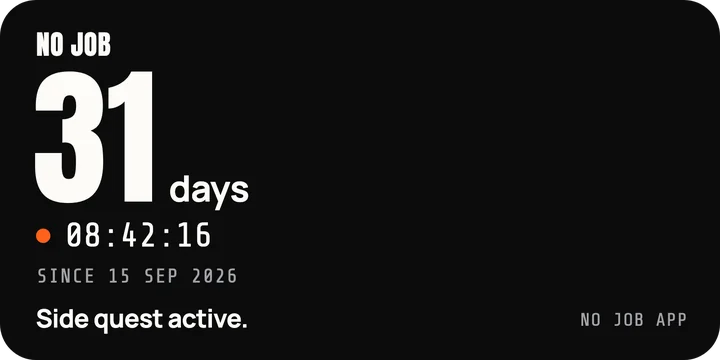
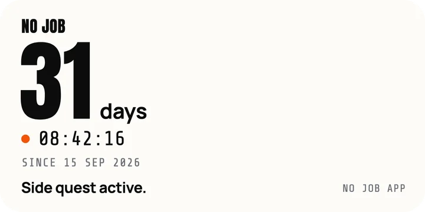
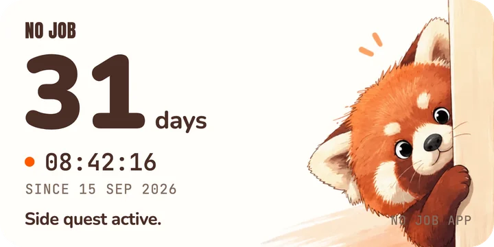
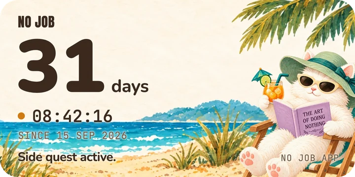
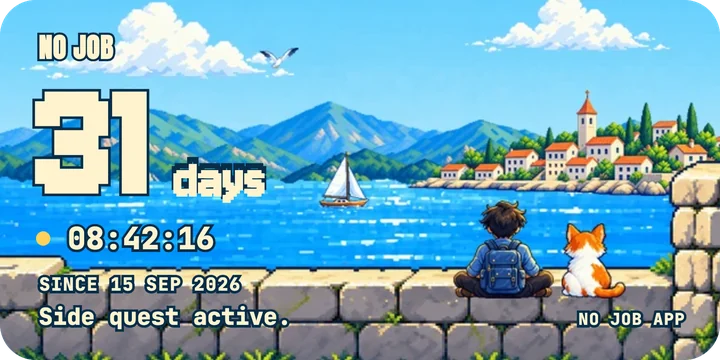
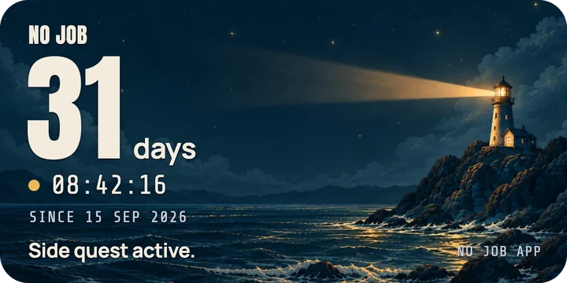
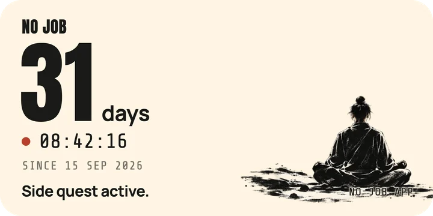
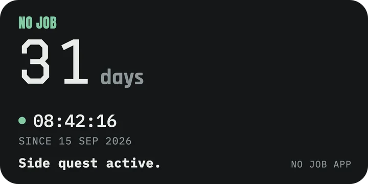

NO JOB · Help & support
How can we help?
NO JOB motivates you to keep moving forward, with a daily line of
encouragement until the day you're hired.
Find a quick answer below.
- No account
- No ads
- On your device
Questions
Quick answers.
Purchases, widgets, Apple Watch and your timer. Tap a question to open it.
Purchases
Is it a subscription? No. Pay once, keep it for life
No. The timer, widgets, Lock Screen, Dynamic Island, Apple Watch and sharing all work without paying. The only purchase is Unlock all themes — you pay once, it never renews, and the themes are yours to keep. The price is shown in the app, in your currency, before you buy.
Restore purchases Get your themes back on a new or reset iPhone
Your themes are tied to your Apple Account, so you can restore them in a few taps.
- Sign in with the same Apple Account you bought with
- Open NO JOB and tap the gear at the top right
- Under Purchases, tap Restore purchases
Restoring brings back your themes, not your timer: the timer is stored on your iPhone (see A new iPhone). You can also restore from the Themes tab.
Request a refund Refunds are handled by Apple
All payments are processed by Apple, so refunds are requested from Apple directly — we can't issue them ourselves.
- Go to reportaproblem.apple.com and sign in with your Apple Account
- Tap I'd like to, then Request a refund
- Pick a reason, select your NO JOB purchase and submit
After a refund, the unlocked themes lock again and NO JOB switches back to its standard look — in the app, on your widgets and on Apple Watch. Your timer isn't affected.
Open reportaproblem.apple.comDevices
How to set up widgets Home Screen, Lock Screen, Dynamic Island, Watch
For the Home Screen:
- Touch and hold an empty spot on your Home Screen
- Tap Edit, then Add Widget
- Search for No Job and tap it
- Swipe to small or medium, then tap Add Widget
Steps for every place — Home Screen, Lock Screen, Dynamic Island and Apple Watch — are in the app:
A widget looks out of date An old count, or the wrong theme
Your widgets count on their own and follow your Display format and theme. If one looks out of date, open NO JOB once to refresh it.
The Live Activity isn't showing Lock Screen and Dynamic Island
In the iPhone Settings app, go to Apps › No Job (on iOS 17 and earlier, scroll down to No Job) and turn on Live Activities. iOS ends a Live Activity after 8 hours: open NO JOB to bring it back.
The Dynamic Island needs an iPhone that has one; on other iPhones the Live Activity shows on the Lock Screen.
NO JOB on Apple Watch The Watch app, complications and Smart Stack
- Open the Watch app on your iPhone
- Under Available Apps, tap Install next to No Job
- On your watch, touch and hold the face, then tap Edit
- Swipe to the complications, tap a spot and choose No Job
Your Watch gets the timer and theme straight from your iPhone — no account needed. Start or stop the timer on your iPhone.
Timer
Change, stop or reset the timer For the day you get hired
Open Settings (the gear). Start date changes when your timer began. Stop timer saves your final time; you can start a new timer anytime. Reset timer starts again from now.
A new iPhone Where your timer is stored
Your timer is stored only on your iPhone, and shared with your widgets and Apple Watch. There's no account and no cloud sync, so we can't see or recover it.
It's part of your iPhone's backup: restoring a backup, or moving to a new iPhone with Quick Start, brings it along. Deleting the app deletes your timer.
Languages and requirements English, Ukrainian · iOS 16.2, watchOS 10
NO JOB speaks English and Ukrainian and follows your iPhone's language. To choose one for NO JOB only, go to Settings › Apps › No Job › Language (shown when your iPhone has more than one preferred language).
It runs on iPhone with iOS 16.2 or later, and on Apple Watch with watchOS 10 or later.
One-time purchase
Make it yours.
Customize NO JOB with a look that fits your mood — each theme restyles the app, widgets, Dynamic Island, Apple Watch and the card you share. A one-time purchase, not a subscription: pay once and keep it for life.
-

-

-

-

-

-

-

-

Use with care
Motivation, not advice.
A few honest words about what NO JOB is, and what it isn't.
Made for motivationNO JOB is a simple day counter with a daily line of encouragement. It's here to cheer you on while you look for your next job.
Not professional adviceNothing in the app is medical, psychological, financial, legal or career advice, and it doesn't replace a professional.
If it doesn't help, stopA long count can feel heavy. If the count, a daily line or anything else in NO JOB makes you feel worse (anxious, low, stressed or unwell in any way), stop using the app right away and delete it from your device.
You're not aloneIf you feel bad in any way, emotionally, mentally or physically, talk to someone you trust or a professional. If you're in crisis or thinking about hurting yourself, call your local emergency number or a crisis line right away.
Your choiceYou use NO JOB at your own discretion and risk. It's provided as is, without warranties, and to the fullest extent the law allows, the developer isn't responsible for how using it affects you. The Terms of Use also apply.
In the app, starting a timer means you agree to the Terms of Use and Use with care. How your data is handled: Privacy policy.
Кілька чесних слів про те, чим є NO JOB, а чим — ні.
Створено для мотиваціїNO JOB — це простий лічильник днів із щоденною фразою підтримки. Він тут, щоб підбадьорювати вас, поки ви шукаєте нову роботу.
Це не порада фахівцяНіщо в програмі не є медичною, психологічною, фінансовою, юридичною чи кар’єрною порадою і не замінює фахівця.
Якщо не допомагає — зупинітьсяДовгий відлік може тиснути. Якщо відлік, щоденна фраза чи будь-що інше в NO JOB погіршує ваш стан (з’являються тривога, пригніченість, стрес чи інше нездужання), одразу припиніть користуватися програмою й видаліть її з пристрою.
Ви не саміЯкщо вам погано — емоційно, психологічно чи фізично, — поговоріть із людиною, якій довіряєте, або з фахівцем. Якщо ви в кризі чи думаєте про те, щоб заподіяти собі шкоду, негайно зателефонуйте за місцевим номером екстреної допомоги або на лінію кризової підтримки.
Ваш вибірВи користуєтеся NO JOB на власний розсуд і ризик. Програма надається «як є», без гарантій, і в найповнішій мірі, яку дозволяє закон, розробник не відповідає за те, як її використання на вас вплине. Також діють Умови використання.
Запускаючи таймер у програмі, ви погоджуєтеся з Умовами використання та «Користуйтеся обачно». Як ми обробляємо ваші дані: Політика конфіденційності (англійською).
Privacy
Your timer stays yours.
-
No account
Open the app and start. No sign-up, no email, no password.
-
No ads
Nothing gets between you and your day. The app never shows ads.
-
On your devices
Your timer lives on your iPhone and Apple Watch, not on a server.
Still need help?
Write to us and tell us what's going on.
nojobapp-support@codeandsprites.onlineEmail support
Tell us your iPhone model, iOS version and theme. Writing from the app (Settings › Contact support) adds the app version for you.